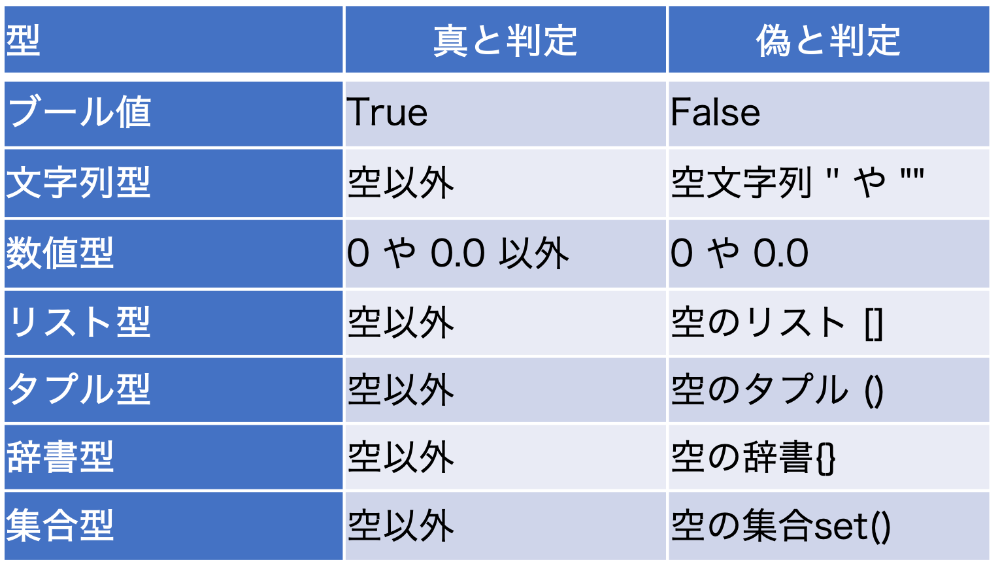

PythonのTIPS
目次
[top]時刻形式
時刻形式データの作成
datetimeで扱うことのできる時刻形式データを作成する
- datetime.dateを使う（日付のみを扱う場合）
from datetime import date time = date(年, 月, 日)
年、月、日は整数で与える - datetime.datetimeを使う（日付と時刻を扱う場合）
from datetime import datetime time = datetime(年, 月, 日, 時, 分, 秒)
年、月、日、時、分、秒は整数で与える - 現在時刻を与える場合（ローカルタイム）
from datetime import datetime time = datetime.now()
システム時刻をローカルタイムで取得 - 現在時刻を与える場合（UTC）
from datetime import datetime time = datetime.utcnow()
システム時刻をUTCで取得 - pandas.to_datetimeを使う（文字列から日付と時刻に変換）
import pandas as pd time = pd.to_datetime("年-月-日 時:分:秒") # ISO形式の場合例えば、"2021-09-04 12:00:00"のような形式
次のように数字の羅列でもよいtime = pd.to_datetime("年月日時分秒")例えば、"20210904120000"のような形式
時刻形式データから年、月、日などを取り出す
時刻形式データ.取り出したい要素
- datetime.dateの場合
from datetime import date time = date(2021, 9, 4) print(time.year) print(time.moth) print(time.day)
time.yearで2021、time.monthで9、time.dayで4が整数値で返される
時、分、秒を表示しようとするとエラーになる - datetime.datetimeの場合
from datetime import datetime time = datetime(2021, 9, 4, 12, 30, 0) print(time.year) print(time.moth) print(time.day) print(time.hour) print(time.minute) print(time.second)
time.yearで2021、time.monthで9、time.dayで4、time.hourで12、time.minuteで30、time.secondで0が整数値で返される
pandas.to_datetimeの場合も挙動は同じ
時刻形式データから書式指定して取り出す
datetime.strftimeを使う
- 年/月/日
from datetime import datetime time = datetime(2021, 9, 4, 12, 30, 0) print(time.strftime("%Y/%m/%d"))"2021/09/04"の文字列が表示される
時刻表記の書式については時刻表記に用いられる書式指定子一覧参照 - 年/月/日 時:分:秒
from datetime import datetime time = datetime(2021, 9, 4, 12, 30, 0) print(time.strftime("%Y/%m/%d %H:%M:%S"))"2021/09/04 12:30:00" の文字列が表示される - ISOフォーマット
from datetime import datetime time = datetime(2021, 9, 4, 12, 30, 0) print(time.isoformat())
"2021-09-04T12:30:00" の文字列が表示される
詳細はISOフォーマットで表示する参照
時刻形式データの演算
datetime.timedeltaを使うことで時刻形式データの演算を行うことができる
- datetime.datetimeで作成したものを利用
from datetime import datetime, timedelta time = datetime(2021, 9, 4, 12, 0, 0) time_new = time + timedelta(hours=12)
9/4 12時から12時間後の9/5 0時になる - 日単位での演算も可能
from datetime import datetime, timedelta time = datetime(2021, 9, 4, 12, 0, 0) time_new = time + timedelta(days=2)
9/4 12時から2日後の9/6 12時になる - 減算することもできる
from datetime import datetime, timedelta time = datetime(2021, 9, 4, 12, 0, 0) time_new = time - timedelta(days=2)
9/4 12時から2日前の9/2 12時になる - pandas.to_datetimeで作成したものを利用
import pandas as pd from datetime import timedelta time = pd.to_datetime("20210904120000") time_new = time + timedelta(hours=12)datetimeで作成した場合と同様に演算可能
1ヶ月後、1年後を計算する
datetime.timedeltaでは、1ヶ月後、1年後などを指定するとエラーになる
dateutil.relativedeltaを使うと加算・減算が可能
dateutil.relativedeltaを使うと加算・減算が可能
- 1ヶ月後の計算
from datetime import datetime from dateutil.relativedelta import relativedelta time = datetime(2021, 9, 4, 12, 0, 0) time_new = time + relativedelta(months=1)
9/4 12時から1ヶ月後の10/4 12時になる - 1年後の計算
from datetime import datetime from dateutil.relativedelta import relativedelta time = datetime(2021, 9, 4, 12, 0, 0) time_new = time + relativedelta(years=2)
2021/9/4 12時から1年後の2022/9/4 12時になる - 閏年をまたいだ場合
from datetime import datetime from dateutil.relativedelta import relativedelta time = datetime(2021, 9, 4, 12, 0, 0) time_new = time + relativedelta(years=4)
閏年をまたいでも、4年後の同じ日の2025/9/4 12時になる
月末の日を計算する
dateutil.relativedeltaの１ヶ月後の計算を応用して月末の日を計算する
from datetime import datetime from dateutil.relativedelta import relativedelta time = datetime(2021, 8, 1, 0, 0, 0) time_new = time + relativedelta(months=1) - relativedelta(days=1)
ISOフォーマットで表示する
datetime.datetimeのisoformatメソッドを利用する
- デフォルトのISO date表示
from datetime import datetime time = datetime(2022, 3, 8, 12, 31, 12) print(dt.isoformat()) print(type(dt.isoformat()))
2022-03-08T12:31:12（デフォルトでは日付と時刻の間にTが入り、秒まで）
<class 'str'>（文字型に変換されている） - 日付と時刻の間を空白にする
from datetime import datetime time = datetime(2022, 3, 8, 12, 31, 12) print(dt.isoformat(' '))2022-03-08 12:31:12 - ミリ秒まで表示する
from datetime import datetime time = datetime(2022, 3, 8, 12, 31, 12) print(dt.isoformat(timespec='milliseconds'))
2022-03-08T12:31:12.000 - 日付と時刻の間を空白、ミリ秒まで表示
from datetime import datetime time = datetime(2022, 3, 8, 12, 31, 12) print(dt.isoformat(sep=' ', timespec='milliseconds'))
2022-03-08 12:31:12.000
sep=は省略可能 - マイクロ秒まで表示する
from datetime import datetime time = datetime(2022, 3, 8, 12, 31, 12, 30) print(dt.isoformat(timespec='microseconds'))
2022-03-08T12:31:12.000030
datetimeの7番目の引数にマイクロ秒を与えることができる - 分まで表示する
from datetime import datetime time = datetime(2022, 3, 8, 12, 31, 12) print(dt.isoformat(timespec='minutes'))
2022-03-08T12:31
ディレクトリ
ディレクトリのパスを結合する
os.path.joinを使う
UNIX環境では/、Windows環境では¥が設定されるので、OSに依存しないコードが書ける
import os dir1 = "dir_name1" dir2 = "dir_name2" dir_path = os.path.join(dir1, dir2)dir_pathには、UNIX環境ではdir_name1/dir_name2が入る
UNIX環境では/、Windows環境では¥が設定されるので、OSに依存しないコードが書ける
ディレクトリの一覧を取得する
os.listdirを使う
import os input_dir = "ディレクトリのパス" files = os.listdir(input_dir) for f in files: print(os.path.join(input_dir, f))ファイル一覧をリストとして取得し、パスを表示
環境変数、パス
環境変数を取得する
os.environ.getを使う
- 例：カレントディレクトリを取得する
import os cur = os.environ.get('PWD') - 例：LANGの取得
import os lang = os.environ.get('LANG', "C")取得できなかった場合は英語表記（C）に設定
環境変数を追加・上書きする
os.environを使う
- 例：rsyncに用いるコマンド設定（RSYNC_RSH）
import os os.environ['RSYNC_RSH'] = 'rsh'
rshに設定される - 例：セキュリティ上好ましくないのでsshに変更する
import os os.environ['RSYNC_RSH'] = 'ssh'
sshに上書きされる
pythonパッケージへのパスを追加する
sys.path.appendを使う
- 例：親ディレクトリをパスに追加する
import sys sys.path.append('../') - 例：os.pardirを使う方法
import sys import os sys.path.append(os.pardir)
- 例：環境変数に追加する（bash）
% export PYTHONPATH=設定したいパス:${PYTHONPATH} - 例：環境変数に追加する（python）
import os os.environ['PYTHONPATH'] = '設定したいパス'
文字列
大文字と小文字の変換
文字列のメソッドを利用する
- 全て小文字にする
"ABc".lower()
出力：abc - 全て大文字にする
"aBc".upper()
出力：ABC - 大文字と小文字を逆にする
"aBc".swapcase()
出力：AbC - 先頭のみ大文字にする
"aBc".capitalize()
出力：Abc - 単語の先頭を大文字にする
"the abc".title()
出力：The Abc
文字列から改行記号を取り除く
文字列のメソッドを利用する
- 改行コード（LF）を取り除く
"文字列".replace('\n', '') - タブを取り除く場合
"文字列".replace('\t', '') - 機種依存なく改行コードを取り除く
"".join("文字列".splitlines())splitlinesでLFもCRLFも分割し、joinで結合する - 改行コードをLFに置き換える
"¥n".join("文字列".splitlines())
文字列からboolへの変換
文字列が"true"、"t"、"yes"、"1"のいずれかの場合にTrueとする。大文字・小文字は区別しない。
b = "文字列".lower() in ["true", "t", "yes", "1"]bにはTrueかFalseが入っている
条件式
pythonにおける真偽値の判定
- 真偽値 
全ての要素がTrueか判定する
allを用いる
＊allの引数には、リスト、タプル、集合が使用可能
参考：Pythonの組み込み関数all(), any()の使い方
print(all([True, True, True])) 出力：True print(all([True, True, False])) 出力：False＊全てTrueの時のみTrueが表示される
＊allの引数には、リスト、タプル、集合が使用可能
参考：Pythonの組み込み関数all(), any()の使い方
いずれかの要素がTrueか判定する
allを用いる
＊allの引数には、リスト、タプル、集合が使用可能
print(any([True, False, False])) 出力：True print(any([False, False, False])) 出力：False＊１つでもTrueが含まれていればTrueが表示される
＊allの引数には、リスト、タプル、集合が使用可能
全ての要素がFalseか判定する
not anyを用いる
＊allの引数には、リスト、タプル、集合が使用可能
print(not any([False, False, False])) 出力：True print(not any([False, False, True])) 出力：False＊anyの否定を取ることで、全ての要素がFalseの場合を判定できる
＊allの引数には、リスト、タプル、集合が使用可能
Web
pythonでwebサーバを起動
Webページのコンテンツのある場所で以下のコマンドを実行する。
% python3 -m http.server 8000ブラウザから次のようにアクセスする。
http://localhost:8000＊テスト環境での使用を想定しており、公開サーバとはすべきではない
設定ファイル
設定ファイルの形式
次のように[セクション]で区切られ、各セクションに複数のキーと値のペアが配置されている。
[Default] SHELL = /bin/bash TERM = xterm-256color LANG = ja_JP.UTF-8 [filenames] InputFileName = input.txt OutputFileName = output.txt
設定ファイルの読み込み
設定ファイルをconfig.iniとして保存したものを読み込む例。
import configparser
config = configparser.ConfigParser()
config.read("config.ini")
- セクションを表示する場合
print(config.sections())
出力：['Default', 'filenames']
＊キーは大文字、小文字を区別する - キーに対応する値を表示する場合
print(config["Default"]["SHELL"])
出力：/bin/bash - 小文字にした場合
print(config["Default"]["shell"])
出力：/bin/bash
＊キーは大文字、小文字を区別しない - セクション内のキーを全て表示する
for key in config["Default"]: print(key)
出力：shell term lang
- セクション内のキー、値のペアを全て表示する
for key in config["Default"]: print(key)
出力：shell /bin/bash term xterm-256color lang ja_JP.UTF-8
設定ファイルの書き出し
設定ファイルをconfig.iniとして出力するmkconfig.pyを作成する。
#!/usr/bin/env python3
import configparser
config = configparser.ConfigParser()
config['Default'] = {
'SHELL': '/bin/bash',
'TERM': 'xterm-256color',
'LANG': 'ja_JP.UTF-8'
}
config['filenames'] = {
'InputFileName': 'input.txt',
'OutputFileName': 'output.txt'
}
# 書き出し
with open('config.ini', 'w') as f:
config.write(f)
＊出力されたファイルでは、次のようにキーが全て小文字となる。
[Default] shell = /bin/bash term = xterm-256color lang = ja_JP.UTF-8 [filenames] inputfilename = input.txt outputfilename = output.txt
[top]